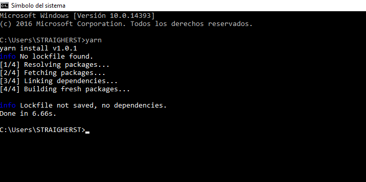
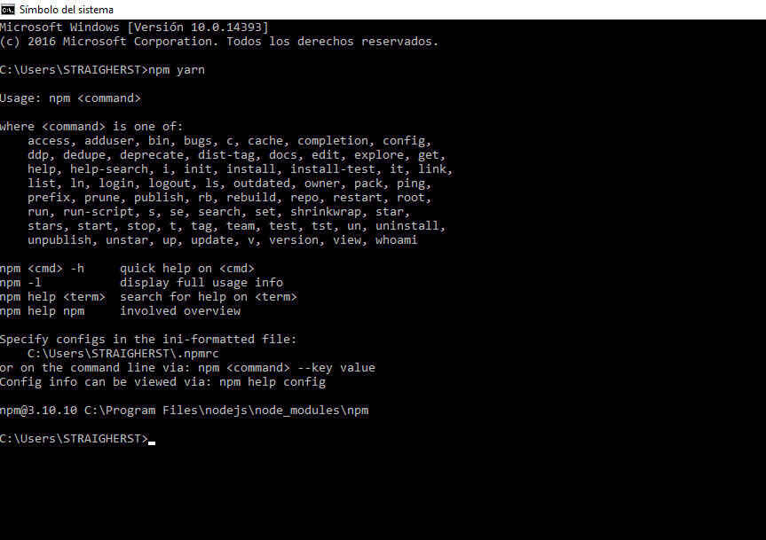
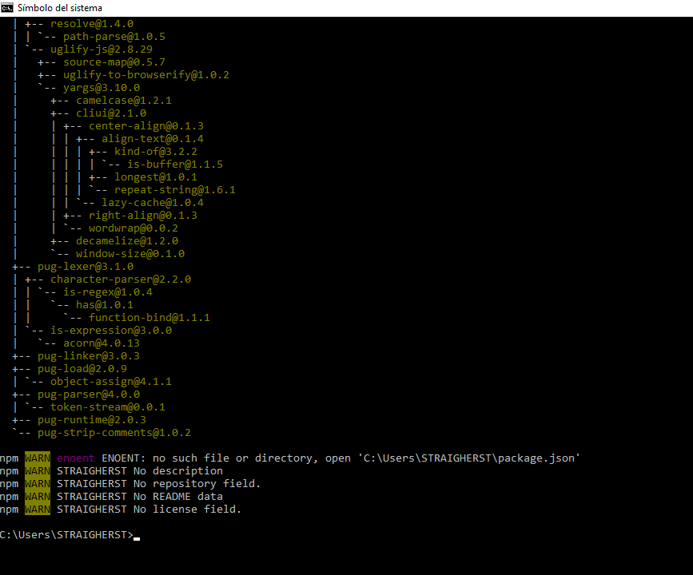
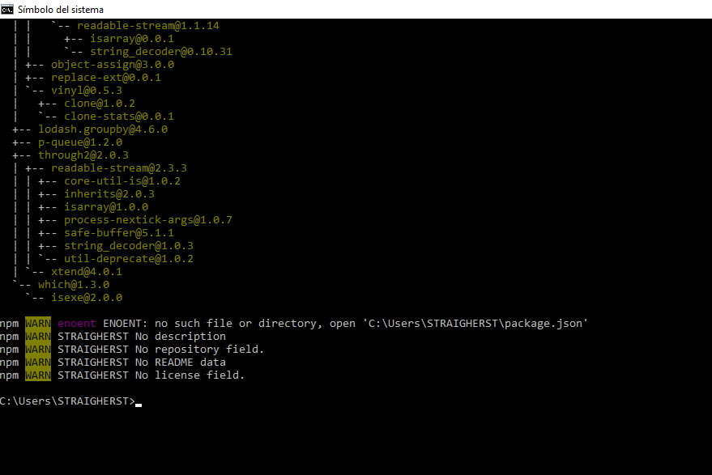

1. Para verificar que Yarn este bien Instalado abrimos Jade.js de la siguiente manera en el buscador de Windows con el siguiente comando
cmd y damos clic en simbolo del sistema, asi:
Para verificar que yarn este bien instalado escribimos en Jade la palabra Yarn damos clic y esperamos unos segundos para que nos muestre un mensaje tal cual como aparece en la siguiente imagen.


4. Como ejemplo ulilizaremos el package PUG , para esto comenzaremos escribiendo en el CMD lo siguiente: npm install pug y esperamos a que cargue para que aparezca el siguiente mensaje:

5. Luego en la misma ventana de CMD escribimos npm install gulp-install cuando finalice el proceso ya tendremos instalado Pug y Gulp

6. Hasta aqui llegan los pasos para instalar paquetes en Yarn.